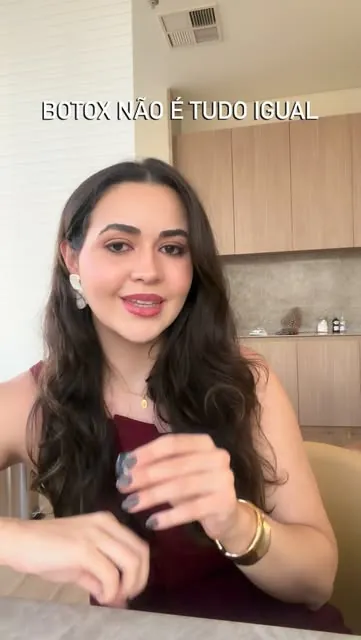

ESTUDO ÓPTICO / 02
Atendimento e tecnologias
01Cuidado com a pele
Avalie sua rotina e esclareça dúvidas sobre os produtos em uso.
02Ultrassom microfocado
Converse sobre a tecnologia divulgada no perfil profissional e sobre indicação em consulta.
03Laser de CO₂
Entenda o que perguntar sobre indicação, preparo e recuperação.
Escuta, indicação e acompanhamento
- 01
Contexto
Conte o que mudou e quais são suas prioridades.
- 02
Opções
Tire dúvidas sobre a rotina, tecnologias e alternativas.
- 03
Planejamento
Combine os próximos passos com a médica.
Dra. Fernanda Bretas
Atendimento em Goiânia. O perfil profissional apresenta conteúdos sobre cuidados com a pele, laser de CO₂ e ultrassom microfocado.
CRM-GO 26448 · RQE 18295 informado no perfil

Carregar vídeo do InstagramFechar vídeo
Comece pela avaliação.
Fale com a equipe sobre horários e sobre o formato de consulta mais adequado para você.
Perguntas frequentes
Posso perguntar sobre mais de um procedimento?
Sim. Você pode organizar suas dúvidas e conversar sobre elas durante a avaliação.
A consulta já define um procedimento?
A avaliação serve para discutir indicações, alternativas e riscos de acordo com cada caso.
Como confirmar o endereço?
Veja a ficha no Google Maps e confirme a unidade com a equipe antes de sair.